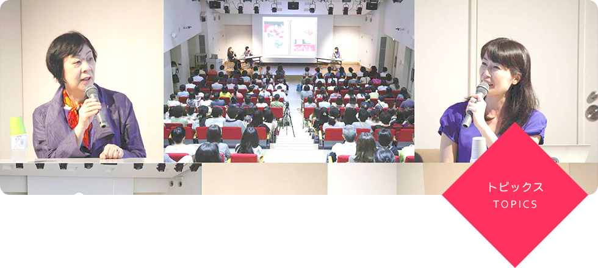
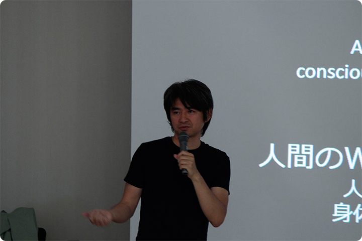
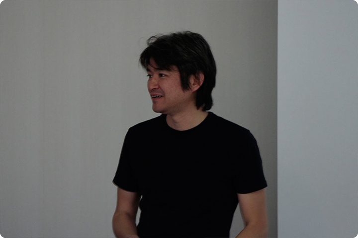
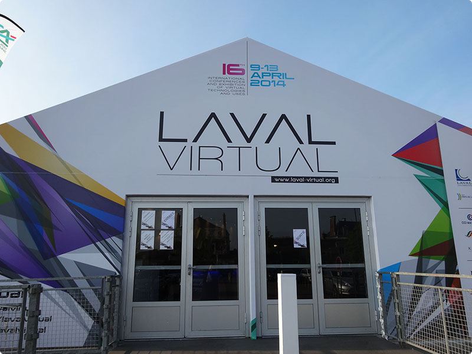
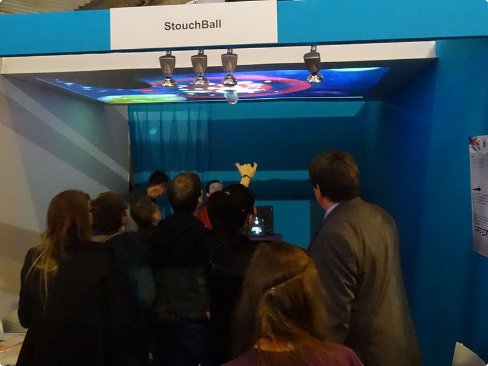
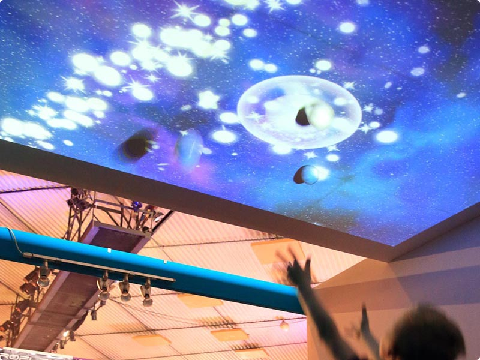
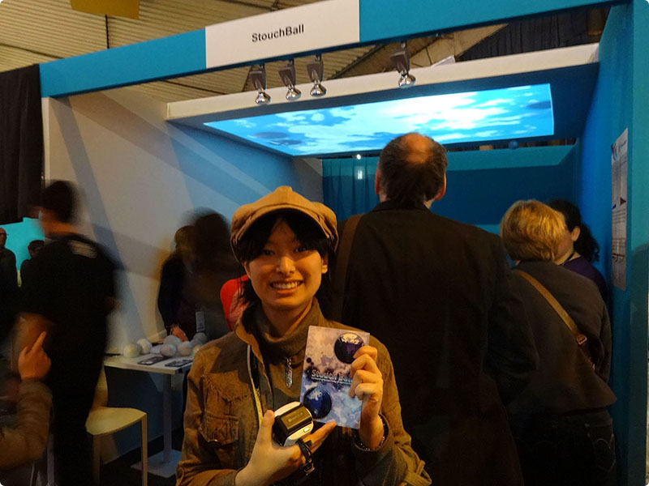
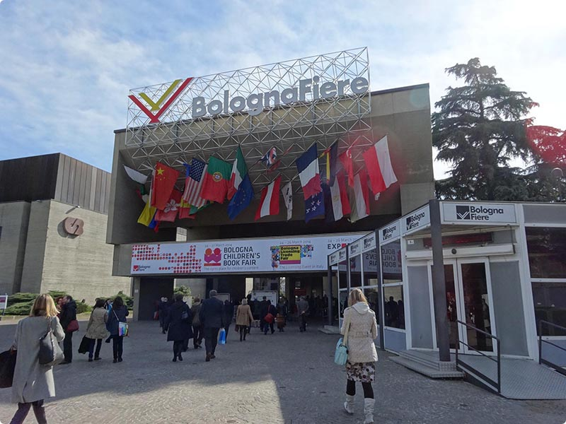
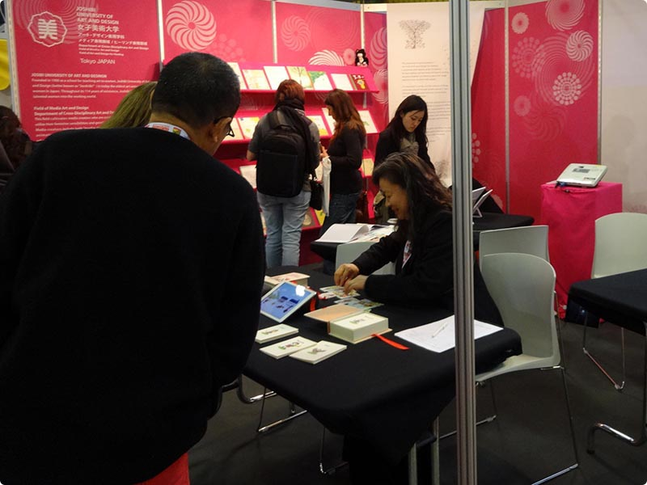
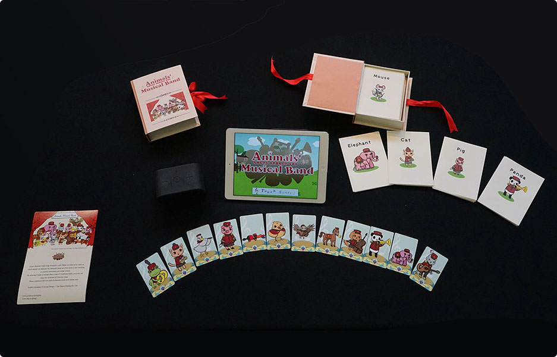

6月5日に水口哲也先生が御講演下さいました！
世界的なゲームクリエイターの水口哲也先生が「メディア文化論特講」で御講演下さいました。水口先生が学生の頃に影響を受けたマービン・ミンスキー「心の社会」による創作のきっかけや、自ら手掛けてこられたゲーム『セガラリー』、『スペースチャンネル5』、『Rez』、世界中の人が注目した『Child of Eden』など新しい試みに至るプロセスなど貴重なお話を聞かせて頂きました。そして、水口先生が自らの経験に基づいたゲーミフィケーションの要素を取り入れた辿り着いた思考の発想法「Wants−ウォンツ可視化メソッド」についてお話下さり、創作活動を続ける学生にとても大きな刺激を与えて頂きました。＜水口哲也先生プロフィール＞
ゲームクリエイター／慶應義塾大学大学院メディアデザイン研究科（KMD）特任教授
人間の欲求とメディアの関係性をリサーチしながら、ビデオゲーム、音楽、映像、プロダクトデザインなど様々な分野でグローバルな創作活動を続けている。ゲームの代表作として、『セガラリー』(1994)、『スペースチャンネル5』(1999)、『Rez』(2001)、『ルミネス』(2004)、『Child of Eden』(2010) など。また音楽ユニット・元気ロケッツ(Genki Rockets)のプロデュースをはじめ、作詞家・映像作家としての顔も併せ持つ。
2002年欧州アルスエレクトロニカにおいて、インタラクティブアート部門Honorary Mention、経済産業省デジタルコンテンツグランプリ・エンターテインメント部門サウンドデザイン賞、文化庁メディア芸術祭特別賞などを受賞。 2006年には全米プロデューサー協会（PGA）とHollywood Reporter誌が合同で選ぶ「Digital 50」（世界で注目すべきデジタル系イノベイター50人）の1人に選出される。


4月10日からフランスで開催されたLaval Virtualで卒業制作を発展させた作品が採択されデモ展示しました
4月10日（木）～13日（日）にフランスのラバルで開催されたLaval Virtualで、内山ゼミの木村さん、栗原さん、宮下さんの卒業制作を発展させた「StouchBall」をデモ展示し人気を博しました。「StouchBall」は電気通信大学の小池・野嶋研究室の的場やすし氏，佐藤俊樹助教らとのコラボレーションによって実現できた作品です。 天井に投影した空と宇宙に「くっつきボール」を投げることで様々な変化を与えゲーム感覚で楽しむことができます。女子美の学生が画像や映像を制作し、電通大が技術開発を行い完成しました。展示会場には子供から大人まで絶え間なく来場者が訪れ、「StouchBall」を楽しむ人々の大きな歓声に包まれました。 Laval Virtualは今年で１６回目を迎えた世界的なイベントで、世界中から応募されたVRなど新しい技術を用いた研究成果の中から審査によって選ばれた優秀なコンテンツが一堂に介す学会と同時に市民参加型のイベントとして注目を集めています。家族連れで賑わう会場の中で、「StouchBall」は、身体を使った新しいタイプのコンテンツとして大きな評価を得ました。美大ならではの発想力と表現力と電通大の高度な技術を合わせることで、学部の学生でも世界で通用するコンテンツ研究ができることが実証されたことは、メディア表現領域の今後とっても大きな出来事でした。これからも新しい挑戦を続け、メディア表現の様々な発展の可能性を探って行きます。

Laval Virtual会場入口
Laval Virtual会場入口

デモ風景
デモ風景

デモ風景
デモ風景

リーダーの木村さん
リーダーの木村さん
3月24日からボローニャ（イタリア）で開催された絵本フェスティバルでデジタル絵本を公開
3月24日（月）〜27日（木）にイタリアのボローニャで開催された世界最大の絵本フェアBologna Children’s Book Fairで女子美のブースを出展し、メディア表現領域の学生が制作した２種類のデジタル絵本を出品し、世界に向かって作品をアピールしました。

Laval Virtual会場入口
Laval Virtual会場入口

内山教授によるデモの様子
内山教授によるデモの様子

『Animals’ Musical Band』 ©2014女子美術大学・大日本印刷株式会社
『Animals’ Musical Band』 ©2014女子美術大学・大日本印刷株式会社